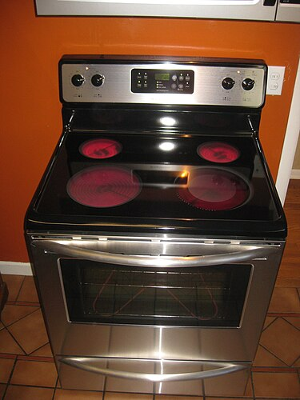

Електричен шпорет или електричен шпорет е шпорет со интегриран електричен уред за греење за готвење и печење. Електричните печки станаа популарни како замена за печките на цврсто гориво (дрво или јаглен ), кои бараат повеќе работа и одржување. Некои модерни печки доаѓаат со вградени аспиратори. Електричен шпорет Греењето на шпоретот може да се контролира со ротационен прекинувач со ограничен број позиции (на пример, шест), од кои секоја вклучува различна комбинација на отпор и затоа различна моќност на греење, или може да има " бесконечен прекинувач“ наречен и симерстат . Некои може да имаат термостат .
